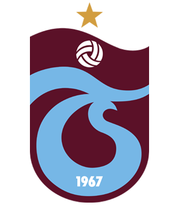

Bordo Mavi Sevda
Trabzonspor, 1967 yılında kurulan, Türkiye Süper Ligi'nin köklü ve başarılı kulüplerinden biridir. Bordo-mavi renkleriyle gönüllerde taht kurmuş bu takımın tarihine, oyuncularına ve başarılarına bu siteden ulaşabilirsin.
